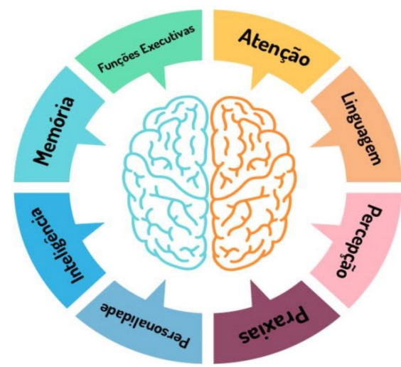

Conheça todas as teorias, domine todas as técnicas, mas ao tocar uma alma humana, seja apenas outra alma humana.
Carl Gustav Jung
Conheça todas as teorias, domine todas as técnicas, mas ao tocar uma alma humana, seja apenas outra alma humana.
Carl Gustav Jung
Olá, eu sou Patrícia Souza, sou Neuropsicóloga e Psicóloga Clínica. Sou apaixonada pela mente humana e seus desafios.
Como Neuropsicóloga eu trabalho com a Avaliação Neuropsicológica, atendendo um público entre (04 a 74 anos).
Como Psicóloga Clinica atendo adolescentes e adultos. Minha abordagem é a TCC (Terapia Cognitiva e Comportamental) que busca compreender a dinâmica entre o pensamento e o comportamento.
Ao longo de 20 anos de estudos, tenho adquirido conhecimentos e habilidades que facilitam minha compreensão sobre o ser humano e suas dinâmicas, como por exemplo a Inteligência Emocional, a Neurociência e a Filosofia.
Meu trabalho é sempre pautado na ética e busca por sua Saúde Mental. Para mim, é uma grande satisfação poder te acolher e acrescentar à sua vida.
Patricia Souza
Neuropsicológica
CRP 17/4377

A Avaliação Neuropsicológica é um tipo de investigação que busca entender melhor como está o funcionamento do seu cérebro em áreas como atenção, memória, linguagem, raciocínio, planejamento, comportamento e emoções. Ela é feita por um(a) psicólogo(a) especializado(a) em neuropsicologia, utilizando entrevistas e testes específicos para avaliar essas funções.
Diferente de exames médicos como tomografia ou ressonância, que mostram a parte física do cérebro, a Avaliação Neuropsicológica observa como o cérebro está funcionando na prática, no seu dia a dia. Isso ajuda a identificar possíveis dificuldades cognitivas ou comportamentais que possam estar impactando a sua vida.
A Avaliação Neuropsicológica pode ser útil em diferentes situações, como:
O processo é feito em etapas. Primeiro, acontece uma conversa (entrevista inicial) para entender suas queixas e seu histórico. Depois, são aplicados testes (parecidos com atividades de papel e lápis ou computador) que avaliam diferentes áreas cognitivas. Em seguida, o profissional analisa os resultados e prepara um laudo, explicando os achados de forma clara. Esse laudo pode ser compartilhado com outros profissionais da saúde, como médicos ou terapeutas, para ajudar no seu tratamento.
A Reabilitação Neurocognitiva é um processo terapêutico que tem como objetivo ajudar a melhorar ou compensar dificuldades cognitivas, como problemas de atenção, memória, linguagem, raciocínio ou planejamento. Essas dificuldades podem surgir após lesões no cérebro (como AVC ou traumatismo), em condições como TDAH, autismo, demência, ou mesmo em casos de transtornos psiquiátricos e emocionais.
Esse tipo de reabilitação é feito por profissionais especializados (como psicólogos, neuropsicólogos, fonoaudiólogos, terapeutas ocupacionais, entre outros) e é sempre adaptado às necessidades de cada pessoa.
A reabilitação acontece por meio de atividades e exercícios direcionados, que estimulam as áreas do cérebro que precisam ser fortalecidas. Também envolve estratégias para lidar com dificuldades no dia a dia — como criar rotinas, usar lembretes, ou desenvolver novas formas de resolver problemas.
Além disso, o trabalho pode incluir a orientação de familiares, para que saibam como ajudar no processo e tornar o ambiente mais favorável à recuperação.
A psicoterapia individual presencial é um método científico eficaz, que busca através da escuta terapêutica, buscar componentes significativos, oriundos do inconsciente e visando propiciar a tomada de estado consciente, permitindo com que os indivíduos consigam ter maior poder de autoconhecimento e a partir de então, passarem a administrar melhor suas vidas assim como suas escolhas.
Minha abordagem é a TCC (Terapia Cognitivo-Comportamental) que é um tipo de psicoterapia que ajuda você a entender como seus pensamentos influenciam seus sentimentos e comportamentos. Muitas vezes, pensamos de forma automática e nem percebemos como esses pensamentos podem nos deixar mais ansiosos, tristes ou estressados. A TCC ajuda a identificar esses pensamentos e a trabalhar com eles de forma mais saudável.
Diferente de terapias que focam mais no passado, a TCC costuma olhar para o presente, buscando soluções práticas para os desafios do dia a dia. O processo é feito em parceria com o psicólogo, de maneira ativa e colaborativa. Você aprende estratégias que pode usar fora das sessões, no seu dia a dia, o que torna o tratamento ainda mais eficaz.
A adolescência é uma fase de muitas mudanças, no corpo, nas emoções, nas relações e na forma de enxergar o mundo. É um período de descobertas, mas também de dúvidas, inseguranças e, às vezes, conflitos internos e externos. Por isso, a psicoterapia pode ser uma ferramenta muito importante para ajudar o adolescente a atravessar essa fase com mais equilíbrio e autoconhecimento.
A psicoterapia é um espaço seguro, sigiloso e acolhedor, onde o adolescente pode falar livremente sobre seus sentimentos, dificuldades, pensamentos e experiências, sem julgamentos. O psicólogo atua como um apoio, ajudando a compreender o que está acontecendo e a encontrar formas mais saudáveis de lidar com os desafios do dia a dia.
sou psicóloga e neuropsicóloga, e atendo vários públicos, atuo com muito amor e dedicação na promoção da saúde mental adolescentes e suas famílias. Ao longo da minha trajetória profissional, tenho me aprofundado nos desafios emocionais e comportamentais que surgem durante a adolescência, uma fase intensa, cheia de descobertas, mas também marcada por dúvidas, pressões e inseguranças.
Como palestrante, meu objetivo é levar informação de qualidade, acessível e sensível, ajudando pais, educadores e os próprios adolescentes a compreenderem melhor o que está por trás das emoções, comportamentos e dificuldades tão comuns nessa etapa da vida. Acredito que falar sobre saúde mental é uma forma de prevenir sofrimentos, desconstruir tabus e fortalecer vínculos.
Mais do que teoria, trago reflexões práticas, acolhimento e ferramentas que podem ser aplicadas no dia a dia. Meu compromisso é contribuir para que adolescentes sejam vistos com empatia, escuta e compreensão, e para que tenham espaço para crescer com saúde emocional e autonomia.
Se você busca uma palestra com conteúdo técnico, mas com uma abordagem humana, sensível e conectada com a realidade dos jovens, será um prazer contribuir com sua escola, evento ou instituição.
O Conselho Federal de Psicologia que é órgão que regulamenta , orienta e fiscaliza a profissão de psicólogo no Brasil iniciou autorizações a consultas psicológicas online desde 2018, com a Resolução CFP nº 011/18.
A partir da Pandemia por Covid-19 no ano de 2020, este método ficou bastante conhecido e se mostrou eficaz por sua flexibilidade. Contudo, Igualmente ao que ocorre em sessões presenciais, o psicólogo deve seguir o Código de Ética Profissional, mantendo o sigilo e a privacidade de tudo que será relatado nas conversas. Cada sessão será combinada entre psicólogo e cliente quanto ao dia, horário, tempo de cada atendimento e a forma (meio) que será realizada a sessão (plataformas de redes sociais).
Alguns benefícios podem ser constatados na modalidade online, como por exemplo: facilitação à comunicação, maior flexibilidade de horários, oferece mais praticidade e dinamismo, evita deslocamentos desnecessários e ideal para os períodos em que o paciente não pode se deslocar.
Você que sempre pensou em fazer terapia, mas não tem tempo em horário comercial ou convencionais, entre e contato para verificarmos a possibilidade de horários. E que assim você possa começar o quanto antes sua jornada rumo a suas autodescobertas!
(Entende e acolhe a dor do outro)
(Especialista no que faz)
(Mais de 20 anos de estudo)
(Respeito à pessoa humana)
Tipo de Atendimento: Individual, presencial ou virtual.
Público: Adolescentes e adultos.
Abordagem: Conduz o processo terapêutico de forma individualizada à luz da TCC, buscando junto com seu paciente o entendimento de suas questões psíquicas, alívio sintomático e o seu crescimento emocional. Tudo isso com ética e respeito pela pessoa humana.
Seu lema é: Conhecer todas as teorias, dominar todas as técnicas, mas, ao tocar uma alma humana, ser apenas outra alma humana”.
Tipo de Atendimento: Individual e presencial.
Público: Crianças, Adolescentes e Adultos
Abordagem: Conduz o processo Neuropsicológico à luz da ética da psicologia com ferramentas consideradas favoráveis pelo CRP.
psipatricia.souza@hotmail.com
(84) 99109-0634
@patriciasouzapsi_